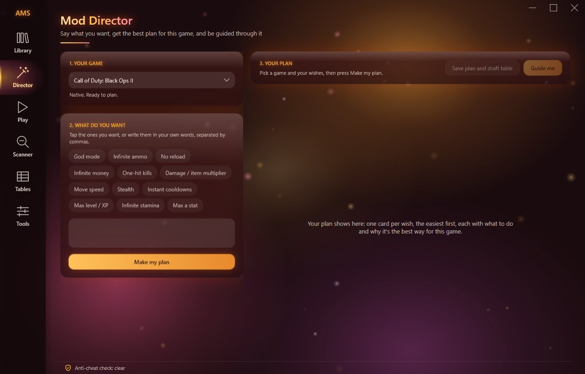

AndersMod Studio
Mod single-player PC games while they run. Find a value, make it a cheat, and keep it working after the game restarts. Or tell the Mod Director what you want and let it plan the whole thing for you.

- Mod Director — pick a game, say what you want (god mode, infinite ammo, max money...), and get the easiest way to do each one, with a step-by-step guide.
- Find any value — exact numbers, “went up / went down”, unknown values, all types at once, big-endian, your own custom types, and a blind hunt for things with no number on screen.
- Cheats in plain words — Freeze, Never decrease, Set to, Always max, and one-click god mode that switches off just the code that hurts you.
- Built to last — stable pointers that survive a restart, and saved mods that come back the next time you open the game.
- Unity games by name — reads the game's own field names, so “health” or “gold” is a search, not a scan.
- Play tab and overlay — your cheats as cards with switches, sliders and hotkeys, plus a click-through in-game overlay.
- Cheat tables — opens and saves the common .CT format, runs table scripts in a safe sandbox, and exports a standalone trainer.
- Power tools — memory viewer, structure dissect, pointer scanner, what-writes / what-accesses, a step debugger and a script assembler.
A Closer Look


Quick Start
1. Pick Your Game
Library lists your Steam and Epic games with their engine. A red lock means anti-cheat: it stays off limits. Press Approve for live on the game you want to mod.
2. Say What You Want
In Director, tap the wishes (or type your own) and press Make my plan. Guide me walks you through each one; Save plan writes a draft table.
3. Or Find It Yourself
In Scanner, type the number you see, change it in the game, scan again. Can’t see it? Use I can’t see it and say whether it went up or down.
4. Make It a Cheat
Right-click a value → Make cheat. For god mode, press Make god mode and take a hit: the studio finds the code that lowers your health and switches only that off.
System Requirements
Windows
Windows 10 or 11, 64-bit. Nothing else to install: .NET is built in.
Games
64-bit single-player PC games. Value cheats work on 32-bit games too; the debugger and scripts are 64-bit only for now.
Space
About 65 MB. Your settings and saved mods stay in your user profile, never next to the exe.
Questions
Will it get me banned?
It’s made for single-player and offline games. Anything with anti-cheat is locked out, and games that play online show a “single-player / offline only” warning. Don’t use it in online or competitive play.
Windows or my antivirus warns about it
The exe isn’t code-signed, so SmartScreen shows “unknown publisher” (More info → Run anyway). Some antivirus tools flag any program that reads other programs’ memory; that’s what a modding tool does. Check the download against the SHA-256 shown next to the button.
Does it inject anything into my game?
No. It reads and writes memory from outside, the same way a debugger does. Code cheats change a few bytes in the game’s memory and put them back exactly when you switch them off or close the studio.
Can I use my existing cheat tables?
Yes, the common .CT format opens and saves, including groups, pointers, hotkeys, dropdowns and scripts. Table scripts run in a sandbox with no file or system access, and with a time limit.
Why does a game say “values only”?
Its code is protected (for example by anti-tamper). You can still change numbers like health or money, but the studio won’t touch its code.
Where are my settings and saved mods?
In %APPDATA%\LiveModStudio. Delete that folder to start fresh; the studio itself is just the unzipped folder.